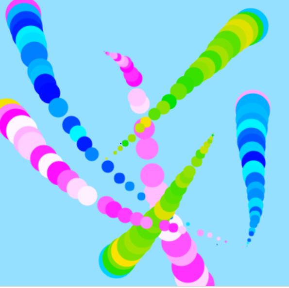
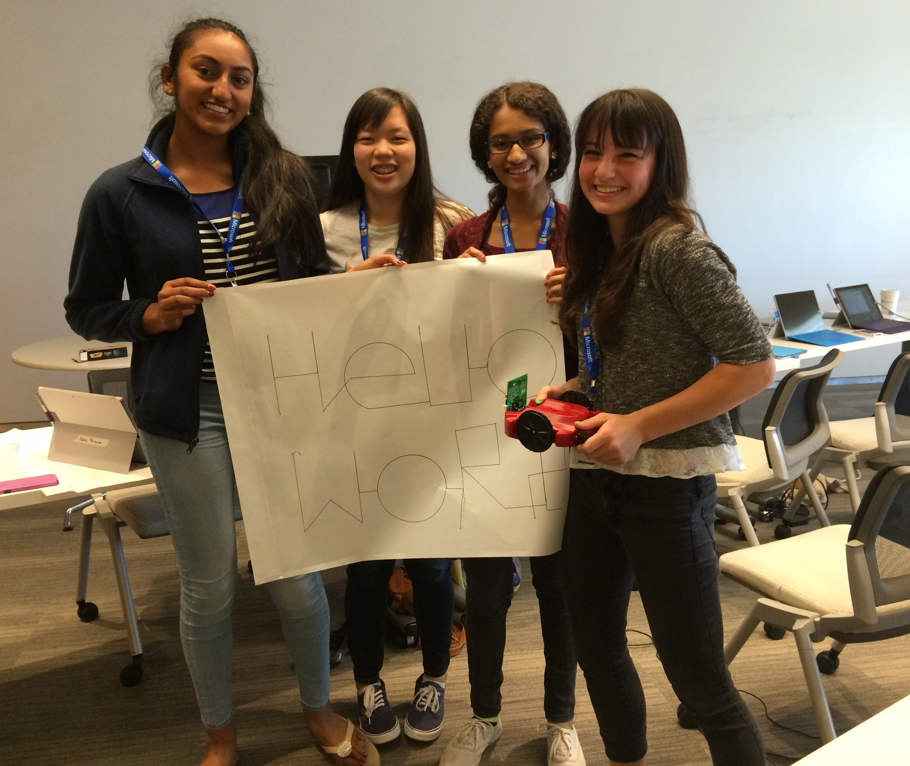
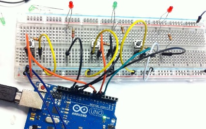
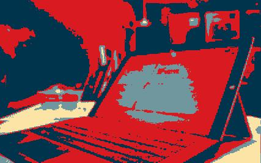
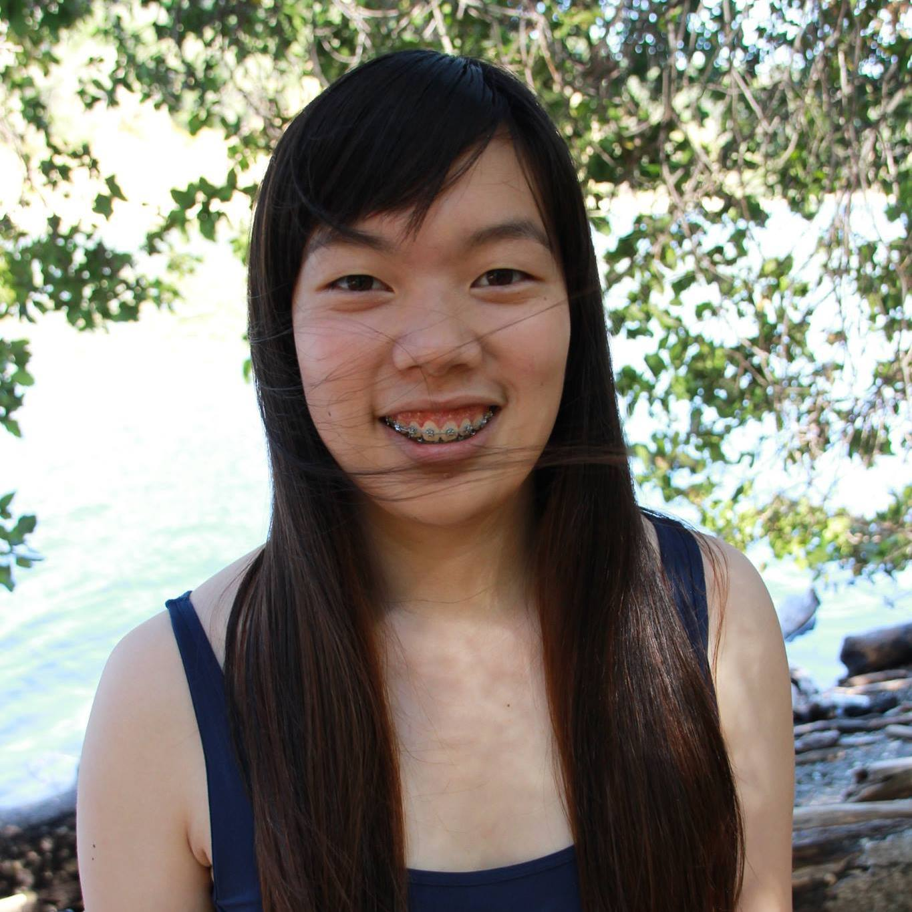

This is a website that showcases my Girls Who Code Projects! The Girls Who Code Summer Immersion Program is a 7-week intensive computer science course that embeds classrooms in technology companies and universities. Girls learn everything from robotics to mobile development to HTML and CSS while gaining exposure to the tech industry and receiving valuable mentorship from women working in technology.
In order to find out more about the program, click the logo below:

In the first week, we learned about simple animations in Javascript. Using the
Khan academy environment, we learned how the loop function worked and how to make objects move
across the screen. For this unit, I paired up with Audrey to make a simple fish tank.

We also made programs that simulated Jackson Pollock's splatter paintings.

Then, we got into larger groups and made a city scroller assignment. We were assigned to make a
background that would continuously scroll, creating a scene.

In addition, we made it a game where a bear collects honeys and avoids aliens. I created and animated
the front layer ( the moon ) and the bear!
During the second week, were exposed to a new language, Python, and used that to program small
robots called Scribblers. In groups of four, we worked to make our robots do something special.

With Isabel, Jananni, and Vibha, I programmed the robot to write "Hello World" on a large piece of
poster paper while "beeping" the tune to Hello, Goodbye by the Beatles.
In order to become familiar with the Arduinos, we recreated the game Simon with the Arduinos. I worked with Pratibha in this activity. 
This was Pratibha, Shweta, and my Tic-Tac-Toe project! It was the second project made using the Arduino kits.

In this project, we were given the choice of making anything out of the arduino kits. This project
proved to be difficult because we did not have any port extendors, limiting us to the 13 pins to control the
9 LED lights and two buttons.

Hi! I'm Emily Lo, an upcoming senior at Lynbrook High School. I enjoy spending time with my family, drawing, singing, and of course coding. I made this website as a part of the Girls Who Code Summer Immersion Program curriculum. 